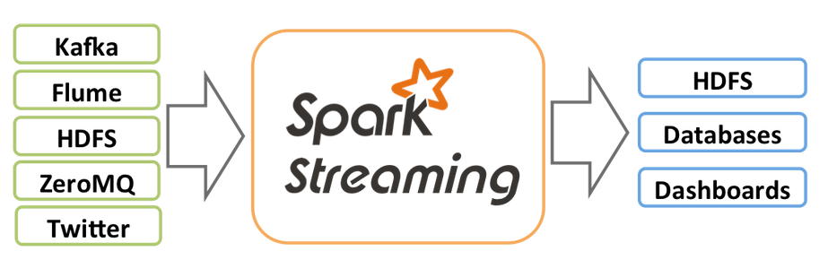
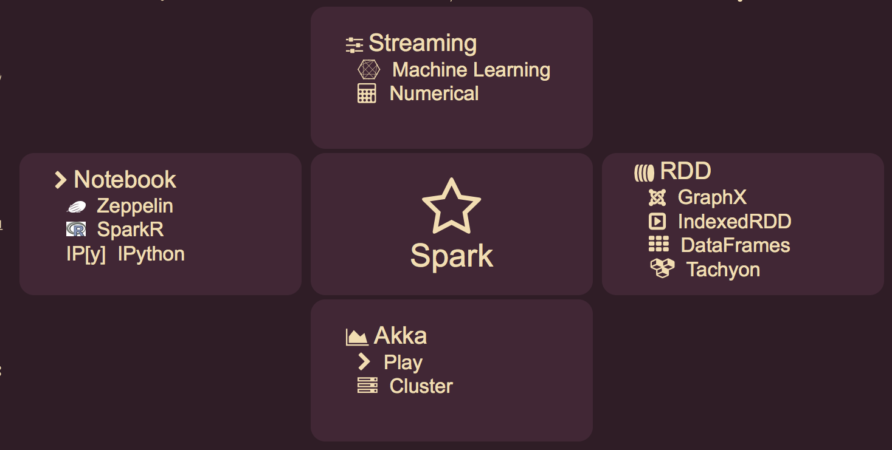
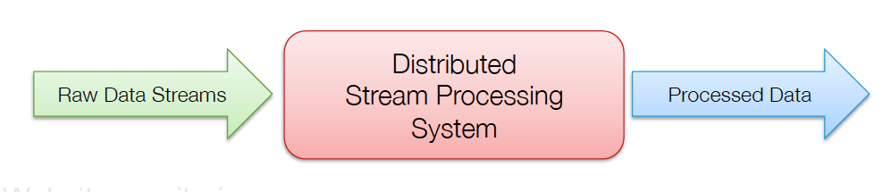

A Data Science Methodology With Spark

Data Mining
- Review abstract
- Discuss installation
- Mention parallized collections in Scala
- Need to know Scala
- Expand Key Components
- Create a streaming template in Scala
- Create a streaming template in Java
- Create a bigger example
- Update references
Refine
Schema
Spark is hyped as the next "Big Thing" in "Big Data". Well all of it is true.
With in memory computing, resilient data sets, streaming, data frames, machine learning, rich numerical algorithms, Akka and Scala backed by a large dedicated community of committers, Spark is defining the next generation of "Big Data".
"Big Data" is forecast to become a 50 billion dollar industry with ensuing hype that all you need to do is set up Spark, hire few analysts and throw a ton of data at it and divine business patterns will emerge. Nothing could be farther from the truth.
Data Science - the revealing of knowledge from data, is an interdisciplinary approach that takes us through a challenging but rewarding exploration of data. Brute force often circumvents this journey only to impart risk and devalue knowledge. So don't let brute force do your thinking for you. "Big Data" is not "Smart Data"
So the purpose of this talk is to convey the good news that Spark in standalone mode is also a good platform to seek out "Smart Data" with exploratory Data Science. Spark's best features: RDDs (Resilient Data Sets) and streaming, manage data and apply algorithms in simple, consistent and scalable ways.
This talk illustrates Spark Streaming
Store
- History
- Spark Streaming Overview
- Apache Spark - Traditional
- Apache Spark - Revealed
- Spark Components
- The Key Components
- Streamming - The Science
- Why Spark Streaming
- Existing Streaming Systems
- Live Streaming and Batch
- Fault-tolerant Stream Processing
- Fault Tolerance in Spark
- Spark Streaming Internal
- Small Batch Jobs
- Languages
- The DStream Programming Model
- Illustrated Example 1 - Initialize an Input DStream
- Illustrated Example 2 - Get Hash Tags from Twitter
- Illustrated Example 3 - Push Data to External Storage
- Illustrated Example 4 - Do Whatever with foreach(...)
- Illustrated Example 5 - Sliding Window
- Example 6 - Arbitrary Stateful Computations
- Example 7 - Combining Batch and Streaming
- Example 8 - Databricks Keynote
- DStreams + RDDs = Power
- Advantage of a Unified Stack
- Input Sources
- Data Science Methodology
- References
Visualize
- Spark Streaming is an extension of the core Spark API that enables:
- scalable, high-throughput, fault-tolerant stream processing of live data streams
Search

- Internally, it works as follows.
- Spark Streaming receives live input data streams and divides the data into batches
- These batches are then processed by the Spark engine
- To generate the final stream of batched results
Business Intelligence
Traditional View

- Core: Distributed task dispatching, scheduling, and basic I/O through Akka
- GraphX: A distributed graph topology for RDDs based on Pregel
- SQL: DataFrames a SQL DSL for feeding structured data into RDDs
- Streaming: Ingests data in mini-batches for RDD transforms & streaming analytics
- MLlib : Machine Learning Pipeline - Spark's original purpose
Solution Space
Classify
- RDD: Resilient Distributed Datasets logically partitioned
- GraphX: Distributed graph topology for RDDs based on Pregel
- IndexedRDD: An efficient updatable key-value store for RDD
- DataFrames: A distributed collection of named columns with a SQL DSL
- Tachyon: Memory centric distributed storage system in C with no GC
- Databases: Local File in Standalone, Cassandra MongoDB HDFS JDBC ...
- Streaming: Ingests data in mini-batches for RDD transforms
- Machine: MLlib Machine Learning Pipeline
- Numerical: Breeze Epic Puck GPU(cuBlas-NVidia) and NetLib-Fortran
- Notebooks: Interactive multi-language Data Science notebooks
- IP[y] IPython: The Data Scientist's favorite notebook with PySpark
- SparkR: A light-weight frontend to use Apache Spark from R
- Zeppelin:A web-based notebook that enables interactive data analytics
- Spark Core: Distributed task dispatching, scheduling, and basic I/O
- Akka: Concurrent, distributed, resilient, message driven, actor based
- Cluster: Standalone, Mesos, Myriad and YARN
Sample
- RDD: Resilient Distributed Datasets logically partitioned across servers
- Streaming: Ingests data in mini-batches for RDD transforms and streaming
Metadata
- Streaming: Ingests data in mini-batches for RDD transforms and streaming
- Streaming API
- Scala
- Machine: MLlib Machine Learning Pipeline
- summary statistics, correlations, stratified sampling, hypothesis testing, random data
- classification / regression: SVMs, logistic and linear regression, decision trees, naive Bayes
- collaborative filtering: alternating least squares (ALS)
- clustering: k-means
- dimensionality reduction: singular value decomposition (SVD), principal components
- feature extraction and transformation
- optimization primitives: stochastic gradient descent, limited-memory BFGS (L-BFGS)
- Numerical: Breeze Epic Puck GPU(cuBlas-NVidia) and NetLib-Fortran
- Breeze
- GPU
- NetLib
Hypothesize
- Scales to hundreds of nodes
- Achieves low latency
- Efficiently recovers from failures
- Integrates with batch and interactive processing
Plan
- Storm
- Replays record if not processed by a node
- Processes each record at least once
- May update mutable state twice!
- Mutable state can be lost due to failure!
- Trident – Use transactions to update state
- Processes each record exactly once
- Per-state transaction to external database is slow
Messaging
- Many environments require processing same data in live streaming as well as batch post-processing
- Existing frameworks cannot do both
- Either, stream processing of 100s of MB/s with low latency
- Or, batch processing of TBs of data with high latency
- Extremely painful to maintain two different stacks
- Different programming models
- Doubles implementation effort
Tasks
- Traditional processing model
- Pipeline of nodes
- Each node maintains mutable state
- Each input record updates the state
- Mutable state is lost if node fails
- Making stateful stream processing fault-tolerant is challenging!
Grid Gain
Runs a streaming computation as a series of very small, deterministic batch jobs
- Chop up the live stream into batches of X seconds
- Spark treats each batch of data as RDDs and processes them using RDD operations
- Finally, the processed results of the RDD operations are returned in batches
- Batch sizes as low as ½ sec, latency of about 1 sec
- Potential for combining batch processing and streaming processing in the same system
Spark
- RDD: Resilient Distributed Datasets logically partitioned
- GraphX: Distributed graph topology for RDDs based on Pregel
- IndexedRDD: An efficient updatable key-value store for RDD
- DataFrames: A distributed collection of named columns with a SQL DSL
- Tachyon: Memory centric distributed storage system in C with no GC
- Databases: Local File in Standalone, Cassandra MongoDB HDFS JDBC ...
- Streaming: Ingests data in mini-batches for RDD transforms
- Machine: MLlib Machine Learning Pipeline
- Numerical: Breeze Epic Puck GPU(cuBlas-NVidia) and NetLib-Fortran
- Notebooks: Interactive multi-language Data Science notebooks
- IP[y] IPython: The Data Scientist's favorite notebook with PySpark
- SparkR: A light-weight frontend to use Apache Spark from R
- Zeppelin:A web-based notebook that enables interactive data analytics
- Spark Core: Distributed task dispatching, scheduling, and basic I/O
- Akka: Concurrent, distributed, resilient, message driven, actor based
- Cluster: Standalone, Mesos, Myriad and YARN
Notebook
- Scala
val tweets = TwitterUtils.createStream( ssc, None ) val hashTags = tweets.flatMap( status => getTags( status ) hashTags.foreachRDD( hasTagRDD => { ... } ) - Java
JavaDStream<Status>tweets = ssc.twitterStream() JavaDstream<String>hashTags = tweets.flatMap(new Function<...> { ... } ) hashTags.saveAsHadoopFiles("hdfs://...") - Python
... soon
Streaming
- Discretized Stream (DStream)
- Represents a stream of data
- Implemented as a sequence of RDDs
- DStreams can be either…
- Created from streaming input sources
- Created by applying transformations on existing DStreams
RDD
Akka
Pattern
Illustrated Example 2 - Get Hash Tags from Twitter
val scc = new StreamingContext( sparkContext, Seconds(1) )
val tweets = TwitterUtils.createStream( ssc, None )
val hashTags = tweets.flatMap( status => getTags( status )
// hashTags are now a transformed DStream
// Tranformations modify data in one DStream to create another DSTream
// getTags( status ) is the function that is applied vie flatMap(...)
// flatMap(...) will also flatten any tree structures into sequences
Confirm
Illustrated Example 3 - Push Data to External Storage
val scc = new StreamingContext( sparkContext, Seconds(1) )
val tweets = TwitterUtils.createStream( ssc, None )
val hashTags = tweets.flatMap( status => getTags( status )
hashTags.saveAsHadoopFiles( "hdfs://..." )
Publish
Illustrated Example 4 - Do Whatever with foreach(...)
- Do whatever you want with the processed data:
- Write to a database, update analytics, UI etc...
val scc = new StreamingContext( sparkContext, Seconds(1) )
val tweets = TwitterUtils.createStream( ssc, None )
val hashTags = tweets.flatMap( status => getTags( status )
hashTags.foreachRDD( hasTagRDD => { ... } )
Review
Illustrated Example 5 - Sliding Window
val tweets = TwitterUtils.createStream( ssc, None )
val hashTags = tweets.flatMap( status => getTags( status )
val tagCounts = hasTags.window( Minutes(1), Seconds(5) ).countByValue()
// ^ ^ ^
// (sliding window operation) (window length) (sliding interval)
Test
Example 6 - Stateful Computations
- Specify a function to generate new state based on previous state and new data
- Example: Maintain per-user mood as state, and update it with their tweets
def updateMood( newTweets, lastMood ) => newMood
val moods = tweetsByUser.updateStateByKey( updateMood, _ )
Config
Example 7 - Combining Batch and Streaming
- Inter-mix RDD and DStream operations!
- Example: Join incoming tweets with a spam HDFS file to filter out bad tweets
tweets.transform( tweetsRDD => { tweetsRDD.join(spamFile).filter(...) } )
Transition
Example 8 - Databricks Keynote
val ssc = new StreamingContext(sc,Seconds(5))
val sqlContext = new SQLContext(sc)
val tweets = TwitterUtils.createStream(ssc,auth)
val transformed = tweets.filter(isEnglish).window(Minutes(1))
// Tweet is a case class
transformed.foreachRDD { rdd => rdd.map(Tweet.apply(_)).registerAsTable(“tweets”) }
SELECT text FROM tweets WHERE similarity(tweet) > 0.01
SELECT getClosestCountry(lat,long) FROM tweetsAnticipate
- Combine live data streams with historical data
- Generate historical data models with Spark, etc.
- Use data models to process live data stream
- Combine streaming with MLlib, GraphX Algorithms
- Offline learning, online prediction
- Online learning and prediction
- Query streaming data using SQL
- select * from table_from_streaming_data

Cloud
- R
- D
- M
Support
// Interactive Shell
$ ./spark-‐shell
scala>val file= sc.hadoopFile(“smallLogs”)
scala>val filtered=file.filter(_.contains(“ERROR”))
scala>val mapped= filtered.map(...)
// Use same code in Spark for processing large logs
object ProcessProductionData {
def main( args:Array[String]) {
val sc = new SparkContext(...)
val file = sc.hadoopFile(“productionLogs”)
val filtered = file.filter(_.contains(“ERROR”))
val mapped = filtered.map(...)
... } }
// Use similar code in Spark Streaming for realtime processing
object ProcessLiveStream {
def main( args:Array[String]) {
val sc = new StreamingContext(...)
val stream = KafkaUtil.createStream(...)
val filtered = stream.filter(_.contains(“ERROR”))
val mapped = filtered.map(...)
... } }
Cluster
- Out of the box, Spark provides
- Kafka, Flume, Akka Actors, Raw TCP sockets, HDFS, etc.
- Very easy to write a custom receiver
- Define what to when receiver is started and stopped
- Also, generate your own sequence of RDDs, etc. and push them in as a “stream”
Warehouse
Security
Query
Resource
Comply
Maturity
References
- Big Data Driving Businesshttp://bit.ly/194auY9
- REST API Tutorialhttp://www.restapitutorial.com/resources.html
- CAP Theoremhttp://en.wikipedia.org/wiki/CAP_theorem
- Hadoophttp://hadoop.apache.org/
- Grid Gainhttp://www.gridgain.com/
- Apache Ignitehttp://ignite.incubator.apache.org/
- Denver In Memory Meetuphttp://bit.ly/1Mb7AQu
- Functional Programminghttp://bit.ly/1vAX8wI
- The Reactive Manifestowww.reactivemanifesto.org/
- Apache Sparkhttps://spark.apache.org/
- RxMarbleshttp://rxmarbles.com/
- PDF at Speaker Deckhttps://speakerdeck.com/axiom6